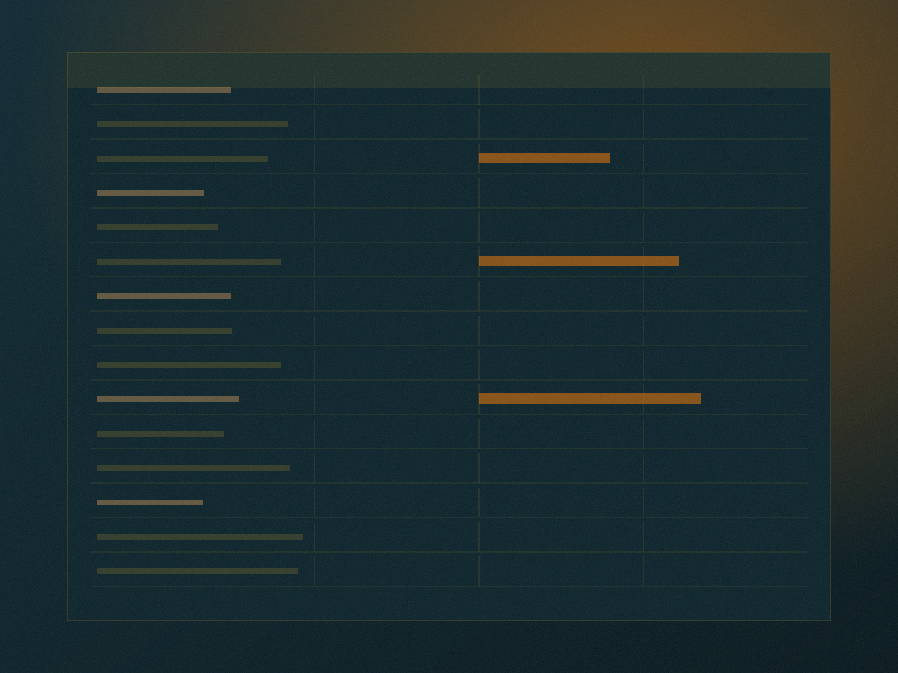

Broad chronology
A navigational timeline for locating periods, themes, and questions without claiming a complete historical sequence.
Open chronology →Archive entries carry source-status labels. Images and records can support inquiry without being treated as proof on their own. This index shows pathways, conditions, and what remains unfinished.

Archive plateIllustrative plate — not a document.
The archive offers pathways rather than a final account. Each pathway makes its limits visible, and none of them is a shortcut to certainty.
A navigational timeline for locating periods, themes, and questions without claiming a complete historical sequence.
Open chronology →Benadir and connected places are considered through movement, language, kinship, work, and changing local relationships.
Open places →A consent-first pathway for testimony that may require restricted access, community review, or a decision not to publish.
Open oral histories →Evidence labels describe the present editorial status of material. They do not rank lived knowledge, decide truth by themselves, or replace careful reading of provenance, consent, language, and context.
Signals that a record, topic, or pathway may be anticipated but is not yet described with public supporting detail.
Identifies recollection, oral knowledge, or community-held context that should not be presented as independently verified evidence.
Marks an analytical reading or research position. Interpretation is distinct from a primary record and may be revisited.
Marks a claim that is attributed rather than adopted by the archive. Publication requires contextual and right-of-reply review.
Signals that available accounts do not yet support a responsible conclusion, or that the matter remains actively contested.
Indicates that material exists but is not available for browsing, quotation, or inference from the public description.
These cards model how a future entry would appear. They contain no names, quotations, dates, or figures, because those require source review before publication.
A contextual visual entry for discussing collective memory and heritage. Provenance, caption history, and permission review are required before use.
A note that accompanies questions about documentation, administration, and how institutional records were produced and kept.
An entry point for thinking about memory, captions, evidence, and provenance — without displaying or paraphrasing restricted material.
A record awaiting repository, creator, date range, language notes, and access conditions before any public description can be responsibly written.
A spatial reference requiring scale, date, naming history, production context, and explicit limits on what the image can establish.
A public description may indicate that a protected item exists without exposing its contents, source, identifying details, or the reason it is restricted.
No records of this type are described yet.
The archive is designed to make pathways and conditions legible. It can describe materials, questions, and access notes while refusing the pressure to turn every lead into a public conclusion.
Context notes, descriptive records, research questions, controlled vocabulary, access conditions, and carefully labelled pathways between materials.
Completeness, final authority, universal representation, or a settled account of questions that remain disputed, private, undocumented, or unresolved.
Not every material should be public, searchable, excerpted, or reproduced. Access may depend on consent, sensitivity, provenance, and ongoing review.
Records may remain provisional, contextual, restricted, corrected, withdrawn, or unresolved. These conditions are part of the record, not a failure of it.
Access is decided before description, not after. Where an item cannot be read, the archive still records that a decision was made — and who made it.
Publicly described and readable, with status labels and context attached.
Description exists; quotation and circulation await community or expert review.
Existence is acknowledged; contents, source, and identifying detail are withheld.
Held for a contributor, custodians, or a care process — not for research access.
Absence from the archive should never be read as absence from lived history. Silence may indicate privacy, danger, loss, or a decision not to publish — and it is not evidence of anything else.
Six dockets set out periods, places, testimony conditions, resistance research, sensitive material, and the editorial method itself.
Press Esc to close · searching page titles and descriptions